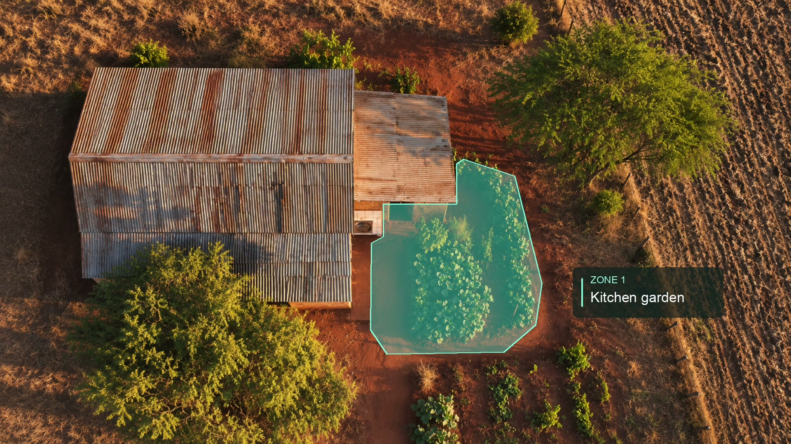

IMBEWUFIELD · 2 NOVEMBER 2026 · STYLE REVIEW
The kitchen garden, from above.
The original clean fly-through cuts to an overhead companion view. One translucent teal area marks the door-side garden and daily path as an illustrative Zone 1. The only graphic movement is a quiet fade.
Compare the overhead view

The moving shot was generated from a cinematography prompt in Google Flow using Veo 3.1 Fast. Its original resolution is 720p. The overhead image was reconstructed using built-in imagegen with two frames from that shot as references; it is a visual match, not an exact 3D projection or surveyed plan. Native Apple Motion supplies the colour area and fade, rendered by Apple Compressor at 1080p.
This is a silent visual review, separate from the live course. No lesson body, saved site geometry or plant species was changed. Exact overhead image prompt · Provenance and checks · Earlier experiments